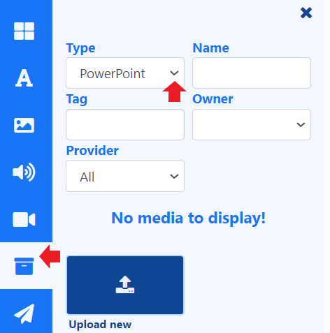

PowerPoint
Display PowerPoint presentations by selecting from one of the following options:
1. Add Video (RECOMMENDED)
For non-Windows Players / users with no full copy of PowerPoint to install, from Office 2010 onwards PowerPoint presentations can be exported as a Video file. Export a PowerPoint file by using the option on the file menu from inside the PowerPoint application.
Continue by adding Video to your Playlists and Layouts.
2. Add PDF
For non-Windows Players / users with no full copy of PowerPoint to install you can save your PowerPoint as a PDF file.
Continue by adding PDF to your Playlists and Layouts.
3. Upload a prepared PPT file (Windows Players only)
PowerPoint is a proprietary format from Microsoft and can only be displayed on a Windows-based signage player which has a full copy of Microsoft PowerPoint installed on each Windows Player. (Please see the Prepare your Windows Players section)
Prepare the PowerPoint Presentation.
PowerPoint will, by default, put scroll bars up the side of your presentation, unless you do the following for each PowerPoint file BEFORE you upload it:
- Open your PowerPoint Document
- Slide Show -> Set-up Show
- Under “Show Type”, choose “Browsed by an individual (window)” and then untick “Show scrollbar”
- Click OK
- Save the Presentation
- Please note that BI Square Brand Activation will not advance the slides in a Presentation, so you should record automatic slide timings by going to “Slide Show -> Rehearse Timings” and then save the presentation.
Upload to CMS
Using the ‘other media’ search, use the Type drop down to select PowerPoint:
-
Upload PPT files directly to Playlists/Layouts using the Library Search from the toolbar.
-
Files uploaded directly to Playlists and Layouts are automatically saved to the Library for re-use.
-
PowerPoint files can also be uploaded in advance to the Library.
-
Set start and end times for PowerPoint files uploaded directly to a Playlist.
-
Save PowerPoint files to Folders on upload, to easily control access to Users.

A Preview for PowerPoint files is not available in the CMS!
Prepare your Windows Players
Install PowerPoint on your Windows PC alongside your BI Square Brand Activation Player and make the following adjustments to the Windows Registry to disable the windows prompt when opening the PowerPoint. Please ensure you have taken all necessary precautions when making these changes.
[HKEY_CLASSES_ROOT\PowerPoint.Show.12]
"BrowserFlags"=dword:00000002
"EditFlags"=dword:00010000
[HKEY_CLASSES_ROOT\PowerPoint.Show.8]
"BrowserFlags"=dword:00000002
"EditFlags"=dword:00010000
[HKEY_CLASSES_ROOT\PowerPoint.SlideShow.12]
"BrowserFlags"=dword:800000a0
"EditFlags"=dword:00010000
[HKEY_CLASSES_ROOT\PowerPoint.SlideShow.8]
"BrowserFlags"=dword:00000002
"EditFlags"=dword:00010000
If you do not feel comfortable changing the registry it may be possible to achieve the same results by waiting for BI Square Brand Activation to open the first PowerPoint and then when the pop-up notification appears, choose to “Open” the file, and un-check the box so you won’t be prompted again.
Enable PowerPoint on Displays
You will need to ensure that the Windows Display Setting Profile used for the Displays you intend to use PowerPoint on, must be first enabled:
- Click on Display Settings under the Displays section of the main CMS menu.
- Use the row menu for the Windows Display Profile and select Edit.
- From the General tab, tick to Enable PowerPoint.
- Save.
Advanced Steps
When displaying PowerPoint, BI Square Brand Activation is relying on Windows and PowerPoint to display the content. This means that error capture and reporting is outside the control of BI Square Brand Activation. To mitigate any issues we recommend disabling Windows error notifications. This can be done by following the steps here.
If you still experience issues, it may also be advisable to disable Office Application Error reporting by merging the registry patch below.
[HKEY_CURRENT_USER\Software\Policies\Microsoft\Office\11.0\Common]
"DWNeverUpload"=dword:00000001
[HKEY_CURRENT_USER\Software\Policies\Microsoft\Office\10.0\Common]
"DWNeverUpload"=dword:00000001
[HKEY_CURRENT_USER\Software\Policies\Microsoft\Office\12.0\Common]
"DWNeverUpload"=dword:00000001